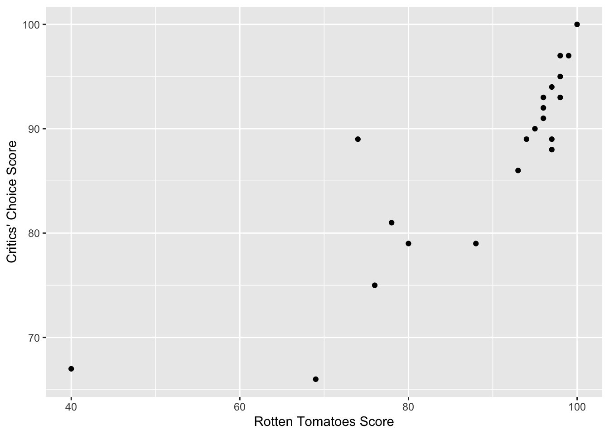
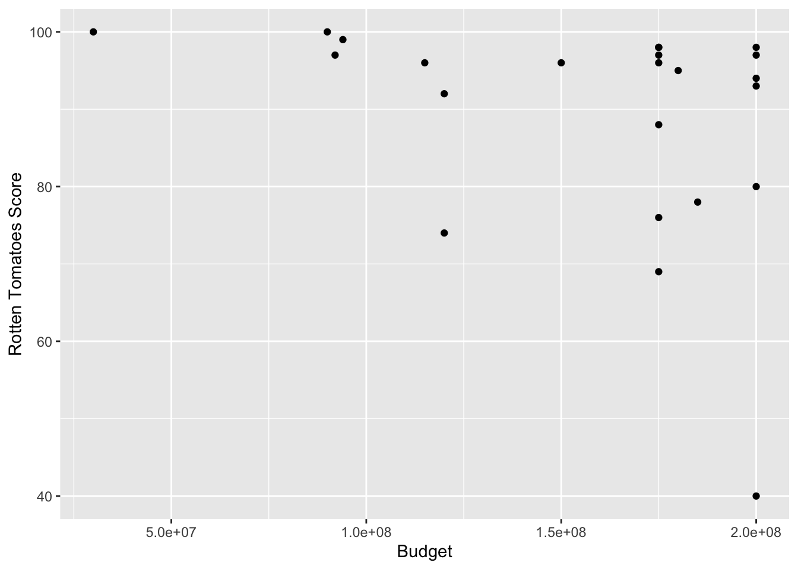
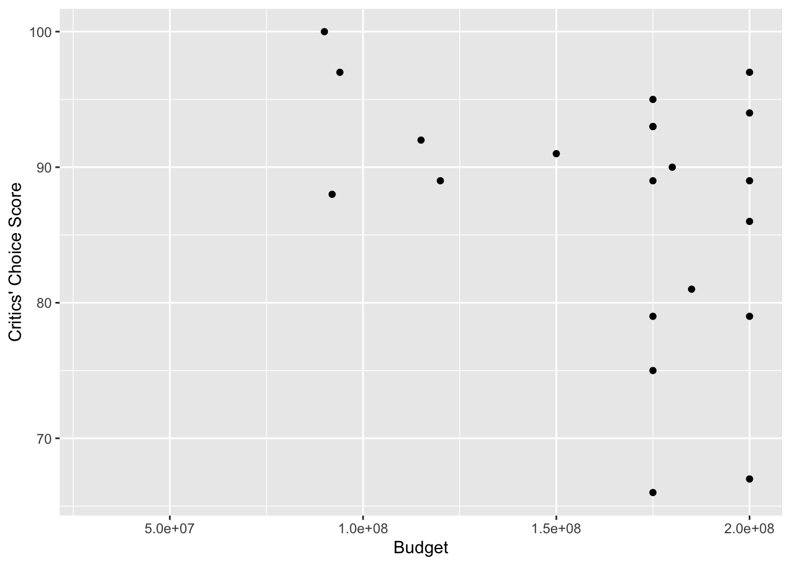
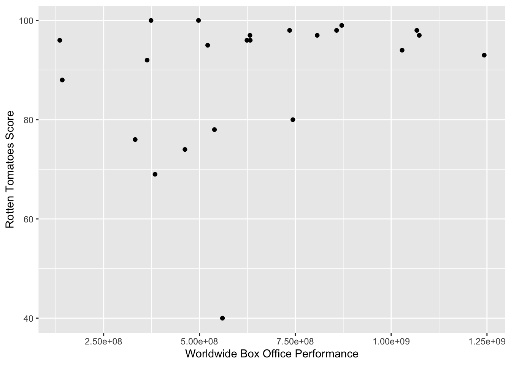
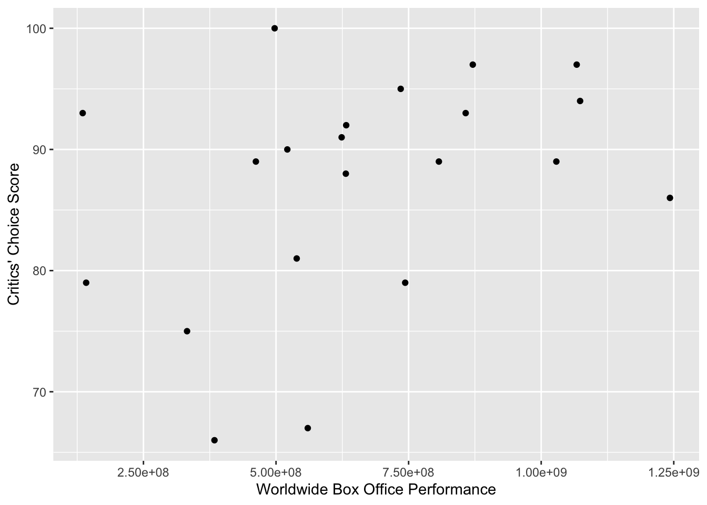

Overview
Goal:
From a collection of datasets about Pixar movies, I aim to answer a
series of questions about the movies’ performance in the box office,
audience reviews, and critic reviews. Research questions are distributed
throughout the document below. Personally, my goal is to get more
practice using R to visualize data with corresponding statistical
tests.
Data:
The datasets are from Tidy Tuesday and can be found at this link: https://github.com/rfordatascience/tidytuesday/blob/main/data/2025/2025-03-11/readme.md
Each dataset contains the same list of Pixar films.
‘pixar_films’ contains the following variables: release date, run
time, and rating (ex. G, PG, etc.)
‘public_response’ contains the following variables: rotten tomatoes
rating, metacritic rating, cinema score, and critics’ choice rating
‘box_office’ contains the following variables: budget, box office
performance in the US and Canada, box office performance in other
countries, and worldwide box office performance
Product:
I’ve included a series of tables and scatterplots below to answer my
research questions.
Interpretation:
Interpretations of the results are included throughout the document,
concluding with my main takeaways.
Loading packages
library(tidyverse)
library(tidyr)
library(tidytuesdayR)
library(pixarfilms)
Reading in data
tuesdata <- tidytuesdayR::tt_load('2025-03-11')
## ---- Compiling #TidyTuesday Information for 2025-03-11 ----
## --- There are 2 files available ---
##
##
## ── Downloading files ───────────────────────────────────────────────────────────
##
## 1 of 2: "pixar_films.csv"
## 2 of 2: "public_response.csv"
pixar_films <- tuesdata$pixar_films
public_response <- tuesdata$public_response
box_office <- pixarfilms::box_office
According to each rating system, which Pixar movie is the best?
public_response %>%
count(film, rotten_tomatoes) %>%
arrange(desc(rotten_tomatoes))
## # A tibble: 24 × 3
## film rotten_tomatoes n
## <chr> <dbl> <int>
## 1 Toy Story 100 1
## 2 Toy Story 2 100 1
## 3 Finding Nemo 99 1
## 4 Inside Out 98 1
## 5 Toy Story 3 98 1
## 6 Up 98 1
## 7 Coco 97 1
## 8 The Incredibles 97 1
## 9 Toy Story 4 97 1
## 10 Monsters, Inc. 96 1
## # ℹ 14 more rows
Toy Story and Toy Story 2 are tied for the highest Rotten Tomatoes
score.
public_response %>%
count(film, metacritic) %>%
arrange(desc(metacritic))
## # A tibble: 24 × 3
## film metacritic n
## <chr> <dbl> <int>
## 1 Ratatouille 96 1
## 2 Toy Story 95 1
## 3 WALL-E 95 1
## 4 Inside Out 94 1
## 5 Toy Story 3 92 1
## 6 Finding Nemo 90 1
## 7 The Incredibles 90 1
## 8 Toy Story 2 88 1
## 9 Up 88 1
## 10 Toy Story 4 84 1
## # ℹ 14 more rows
Ratatouille had the highest Metacritic rating.
public_response %>%
count(film, critics_choice) %>%
arrange(desc(critics_choice))
## # A tibble: 24 × 3
## film critics_choice n
## <chr> <dbl> <int>
## 1 Toy Story 2 100 1
## 2 Finding Nemo 97 1
## 3 Toy Story 3 97 1
## 4 Up 95 1
## 5 Toy Story 4 94 1
## 6 Inside Out 93 1
## 7 Soul 93 1
## 8 Monsters, Inc. 92 1
## 9 Ratatouille 91 1
## 10 WALL-E 90 1
## # ℹ 14 more rows
Toy Story 2 had the highest Critics’ Choice score.
Do audiences and critics tend to agree?
ggplot(
data = public_response,
mapping = aes(
x = rotten_tomatoes,
y = critics_choice
)
) +
geom_point() +
labs(x = "Rotten Tomatoes Score",
y = "Critics' Choice Score")

cor.test(public_response$rotten_tomatoes, public_response$critics_choice)
##
## Pearson's product-moment correlation
##
## data: public_response$rotten_tomatoes and public_response$critics_choice
## t = 7.0994, df = 19, p-value = 9.419e-07
## alternative hypothesis: true correlation is not equal to 0
## 95 percent confidence interval:
## 0.6652273 0.9385896
## sample estimates:
## cor
## 0.8521907
Rotten Tomatoes and Critics’ Choice scores are significantly
positively correlated (r = .85, p < .001), indicating that audiences
and critics largely agree in their assessments of Pixar movies.
One notable difference is that the lowest Rotten Tomatoes score (40,
Cars 2) is considerably lower than the lowest Critics’ Choice score (66,
Cars 3).
Which Pixar movie had the highest budget?
box_office %>%
count(film, budget) %>%
arrange(desc(budget))
## # A tibble: 24 × 3
## film budget n
## <chr> <dbl> <int>
## 1 Cars 2 200000000 1
## 2 Finding Dory 200000000 1
## 3 Incredibles 2 200000000 1
## 4 Monsters University 200000000 1
## 5 Toy Story 3 200000000 1
## 6 Toy Story 4 200000000 1
## 7 Brave 185000000 1
## 8 WALL-E 180000000 1
## 9 Cars 3 175000000 1
## 10 Coco 175000000 1
## # ℹ 14 more rows
Cars 2 had the highest budget, tied with Finding Dory, Incredibles 2,
Monsters University, Toy Story 3, and Toy Story 4. (Interesting that
these are all sequels!)
Do higher-budget movies receive higher audience ratings? Critic
ratings?
Joining box_office and public_response
box_office_ratings <- full_join(box_office, public_response,
by = "film"
)
ggplot(
data = box_office_ratings,
mapping = aes(
x = budget,
y = rotten_tomatoes
)
) +
geom_point() +
labs(x = "Budget",
y = "Rotten Tomatoes Score")

cor.test(box_office_ratings$budget, box_office_ratings$rotten_tomatoes)
##
## Pearson's product-moment correlation
##
## data: box_office_ratings$budget and box_office_ratings$rotten_tomatoes
## t = -1.581, df = 21, p-value = 0.1288
## alternative hypothesis: true correlation is not equal to 0
## 95 percent confidence interval:
## -0.65084378 0.09943172
## sample estimates:
## cor
## -0.3261375
ggplot(
data = box_office_ratings,
mapping = aes(
x = budget,
y = critics_choice
)
) +
geom_point() +
labs(x = "Budget",
y = "Critics' Choice Score")

cor.test(box_office_ratings$budget, box_office_ratings$critics_choice)
##
## Pearson's product-moment correlation
##
## data: box_office_ratings$budget and box_office_ratings$critics_choice
## t = -1.8152, df = 19, p-value = 0.08531
## alternative hypothesis: true correlation is not equal to 0
## 95 percent confidence interval:
## -0.69995728 0.05665837
## sample estimates:
## cor
## -0.3844311
Budget is not significantly correlated with audience ratings or
critic ratings, so spending more on a movie does not seem to predict a
more positive or negative public response.
Do box office numbers correspond with audience ratings? Critic
ratings?
ggplot(
data = box_office_ratings,
mapping = aes(
x = box_office_worldwide,
y = rotten_tomatoes
)
) +
geom_point() +
labs(x = "Worldwide Box Office Performance",
y = "Rotten Tomatoes Score")

cor.test(box_office_ratings$box_office_worldwide, box_office_ratings$rotten_tomatoes)
##
## Pearson's product-moment correlation
##
## data: box_office_ratings$box_office_worldwide and box_office_ratings$rotten_tomatoes
## t = 1.2769, df = 21, p-value = 0.2156
## alternative hypothesis: true correlation is not equal to 0
## 95 percent confidence interval:
## -0.1616814 0.6128106
## sample estimates:
## cor
## 0.268409
ggplot(
data = box_office_ratings,
mapping = aes(
x = box_office_worldwide,
y = critics_choice
)
) +
geom_point() +
labs(x = "Worldwide Box Office Performance",
y = "Critics' Choice Score")

cor.test(box_office_ratings$box_office_worldwide, box_office_ratings$critics_choice)
##
## Pearson's product-moment correlation
##
## data: box_office_ratings$box_office_worldwide and box_office_ratings$critics_choice
## t = 1.7524, df = 19, p-value = 0.09583
## alternative hypothesis: true correlation is not equal to 0
## 95 percent confidence interval:
## -0.06993456 0.69309467
## sample estimates:
## cor
## 0.3730134
Worldwide box office numbers are not significantly correlated with
audience or critic ratings, indicating that popularity does not
necessarily predict positive ratings.
Main Takeaways
Broadly, audiences and critics tend to rate Pixar movies
similarly.
Budget, box office performance, and run time are not
significantly correlated with audience or critic ratings of Pixar
movies.
I was surprised that box office numbers were not more closely
related to audience ratings.
As I continue practicing exploratory data analysis in my
portfolio, I hope to create more complex visualizations and to get more
practice cleaning data. (Thanks to tidy tuesday, I didn’t have to do
much to work with these Pixar datasets!)